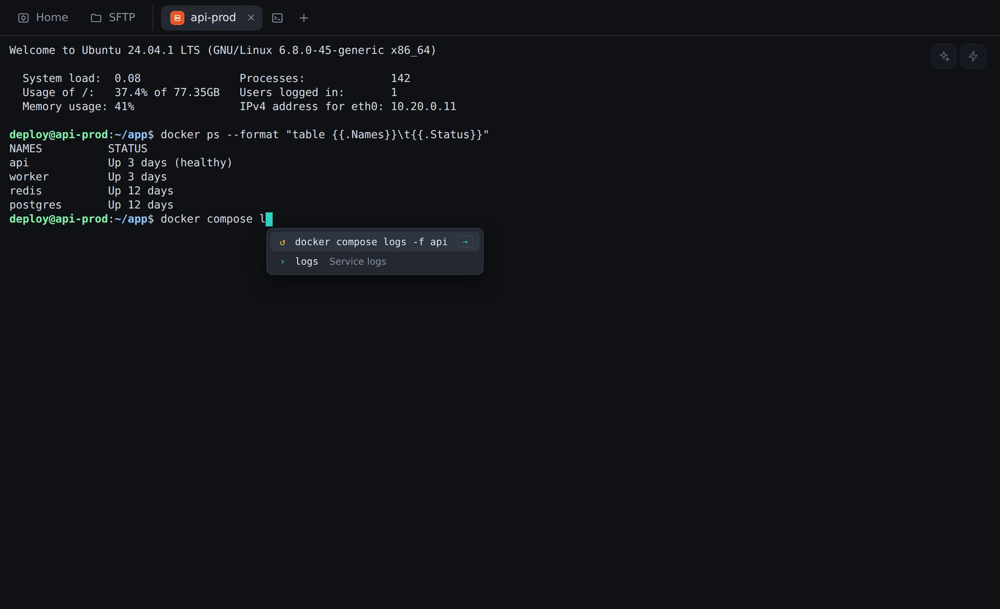
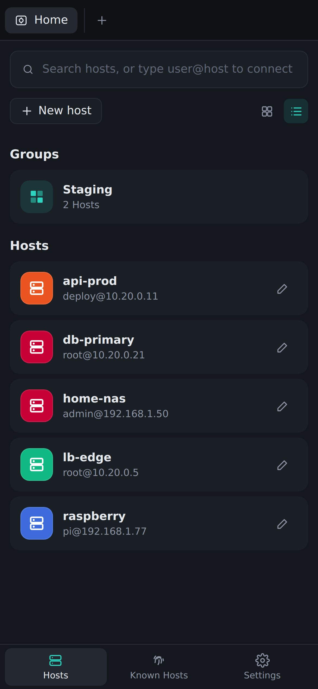
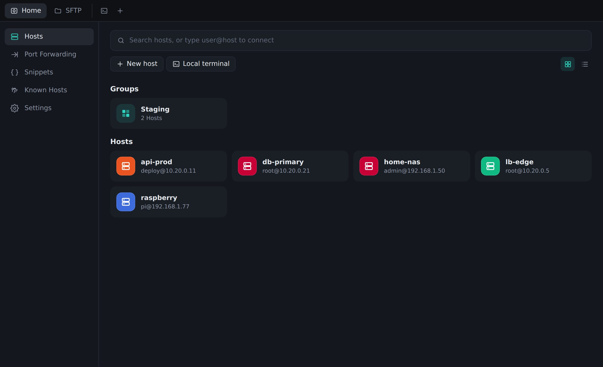
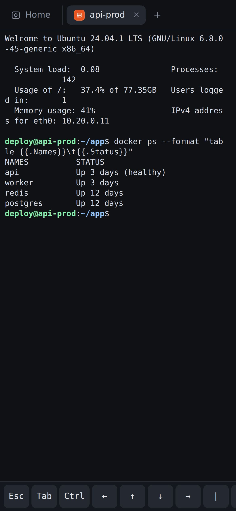

Autocomplete that knows the shell
Suggests commands, subcommands and flags with a short explanation, files and folders on the server, and your own server history. Accept with → or Tab.
A fast SSH client for macOS, Windows, Linux and Android. Hosts, passwords and keys sync end-to-end encrypted, and the terminal helps you type.
No account, no subscription. Your data stays on your devices.


Suggests commands, subcommands and flags with a short explanation, files and folders on the server, and your own server history. Accept with → or Tab.
Hosts, saved passwords and private keys follow you from computer to phone through a secret gist in your own GitHub account — encrypted on the device, GitHub never sees them.
Describe what you need in any language and get the command. Runs locally and free with Ollama, or with your own Claude API key. Dangerous commands are flagged.
Organise servers in groups, connect with a password, a key or your SSH agent, and hop through a bastion. Passwords live in the system keychain.
Extra keys (Esc, Tab, Ctrl, arrows), swipe to scroll, sessions that stay connected in the background and reconnect by themselves after a network change.
Drag and drop files between your computer and the server. Local (-L) and SOCKS (-D) tunnels you can start and stop with one click.
Host keys are verified like OpenSSH does, and a changed key blocks the connection. Written in Rust, no telemetry.
Midnight, Ocean, Amethyst, Forest, Ember, Daylight — or follow the system. The terminal colours change with the theme.


Always the latest version. Free for personal and commercial use.
xattr -dr com.apple.quarantine "/Applications/Termius Alternative.app"chmod +x TermiusAlternative-Linux.AppImage && ./TermiusAlternative-Linux.AppImagesudo apt install ./TermiusAlternative-Linux.debYes. There is no account and no paid plan. The source code is on GitHub.
In the system keychain (macOS Keychain, Windows Credential Manager, Secret Service on Linux), or in the app's private storage on Android. Sync uploads them only encrypted with your sync password.
Settings → Sync: paste a GitHub token with only the “gist” permission and choose a sync password. Do the same on your other devices with the same password. The app syncs on start, every few minutes and after every change.
Not with the default local AI (Ollama) — everything stays on your computer. If you choose the Claude API, your request goes to Anthropic with your own key.